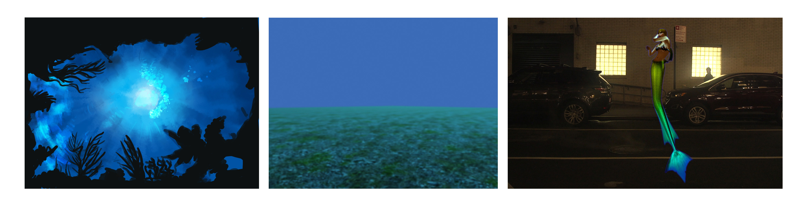

This is a project in which we explore motion capture, 3D softwares and other 2D tools to tell a story about the little mermaid came to the city but finally lost herself in it. This project is collaborated with Evan Xia, Dana Melaver and Jiwon Kim.
With emerging technologies, such as motion capture and 3D scanning, becoming more mainstream, there are certain implications that should be considered. Capturing the image of a person inherently takes away the agency over their own image; in motion capture — their body. We are trying to use technologies to guide a gateway to fantasy.
We borrowed ideas from the fairy tale “The Little Mermaid”, using the little mermaid as a tool for the exploration of various notions, including violence, sexuality, humor, and aesthetics, and playing in between the virtual and physical world, from virtual utopia to the modern society.
We used Optitrack to capture the motions such as swimming, combing hair and smoking, and put the data into Maya to create the movement of the character.
We used scenes created in both 2D and 3D tools to explore the idea of representation. Scenes change from black screen to digital 2D spaces, digital 3D spaces and real physical world.
